PIXELCRAFT visual quality audit · 2026-11-10T06:28:11+00:00 · method pixelcraft-1.0
GITCRAFT Game Quality History (/games/)
/home/user/GITCRAFT/forgecraft/ui/dist/games
resolved 15 · new 0 · regressions 0 · coverage lost: none · details at the end of the report
Confidence: only automatic journeys (no task-specific journeys with expected taps); browser emulation only (no physical-device evidence). Coverage and confidence are separate from quality; nothing is capped or awarded for code existing.
2 · Category scores
| Category | Area | Points | Awarded | Weakest metric | Evidence |
|---|---|---|---|---|---|
| Visual Quality | Spacing and rhythm | 25 | 24.3 | spacing values on a 4-px scale · 88% | measured ×120 |
| Visual Quality | Layout and composition | 25 | 25 | no horizontal overflow · 100% | measured ×200 |
| Visual Quality | Typography and hierarchy | 20 | 17.7 | a small set of font sizes · 49% | measured ×120 |
| Visual Quality | Buttons and controls | 20 | 18.7 | one clear primary action per group · 58% | measured ×106 |
| Visual Quality | Visual consistency | 10 | 10 | few font families · 100% | measured ×54 |
| Usability | Interaction efficiency | 25 | 25 | journeys complete · 100% | measured ×16 |
| Usability | Navigation and discoverability | 20 | 20 | every screen within 2 taps · 100% | measured ×19 |
| Usability | Mobile ergonomics | 25 | 25 | responsive viewport meta · 100% | measured ×80 |
| Usability | Feedback and interaction states | 15 | 15 | controls show a pressed state · 100% | measured ×31 |
| Usability | Accessibility | 15 | 15 | axe-core WCAG 2.2 AA checks · 100% | accessibility ×30, measured ×10 |
| Consistency | Cross-screen consistency | 25 | 25 | headers, heading sizes and fonts match across screens · 100% | measured ×12 |
| Consistency | Component consistency | 25 | 25 | few button variants · 100% | measured ×6 |
| Consistency | Responsive consistency | 20 | 20 | the same content at every size · 100% | measured ×10 |
| Consistency | Design system adherence | 20 | 11.4 | a small set of corner radii · 0% | measured ×24 |
| Consistency | State consistency | 10 | 10 | pressed treatment applied consistently · 100% | measured ×4 |
3 · Strongest screens
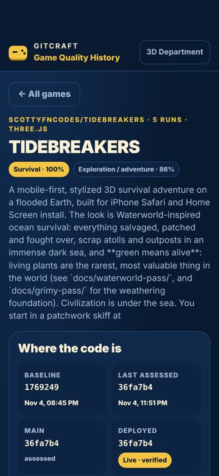
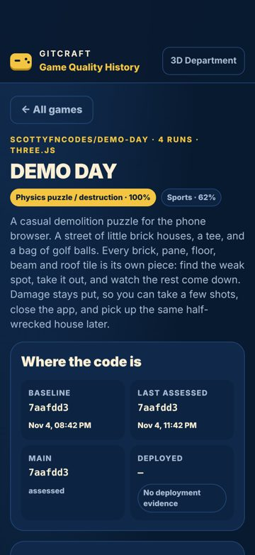
4 · Weakest screens

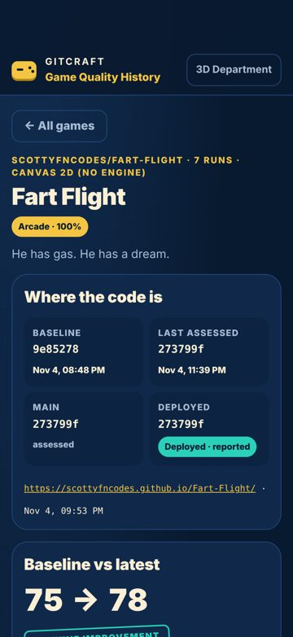
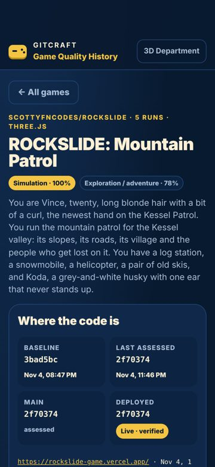
5 · Critical usability defects
None found.
6 · Spacing and layout defects
None found.
7 · Button and control defects
Two primary actions compete
minor Measured (rendered DOM)seen 2×polish
'TIDEBREAKERS Survival Exploration / adventure 77 LOW CONF. C' and 'DEMO DAY Physics puzzle / destruction Sports 78 LOW CONF. ME' are both strongly filled, similar in size and side by side, so neither reads as the main action.
Fix: Keep one filled primary button per group; make the other secondary (outline or tonal).
Where and what was measured
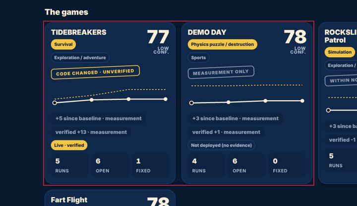
8 · Mobile-specific findings
None found.
9 · Screenshot gallery
Browser emulation (Playwright + Chromium; iPhone safe areas emulated through CDP). No physical-device evidence was supplied.
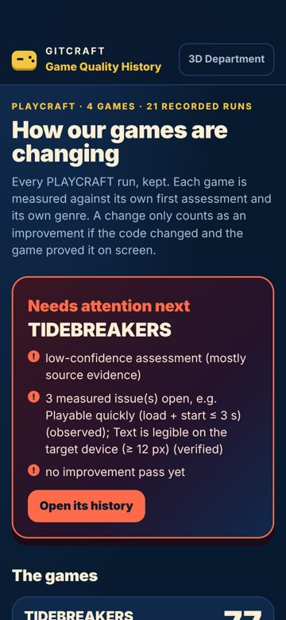
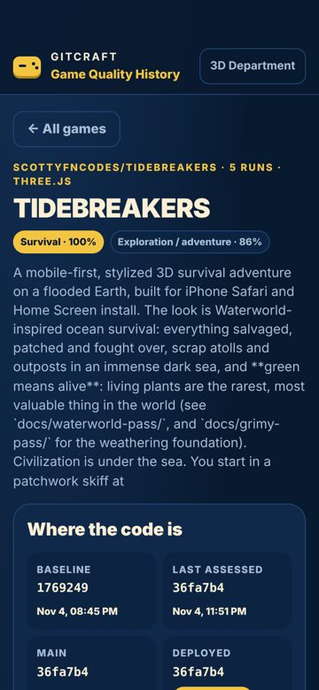
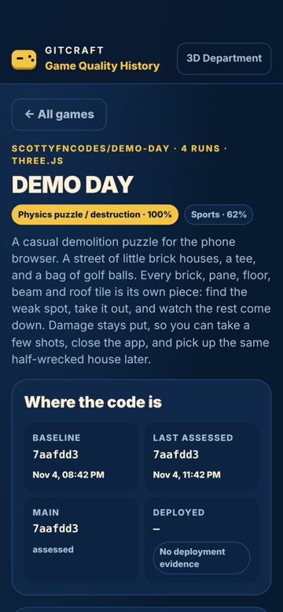
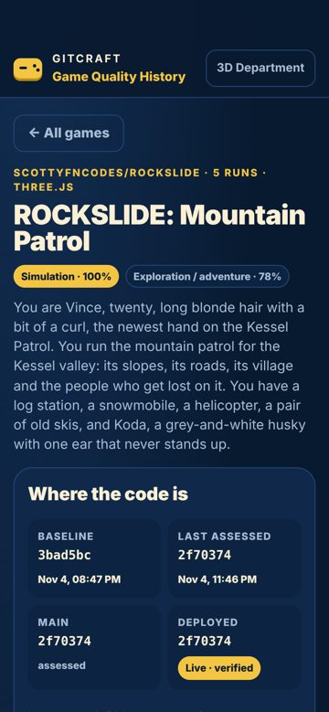
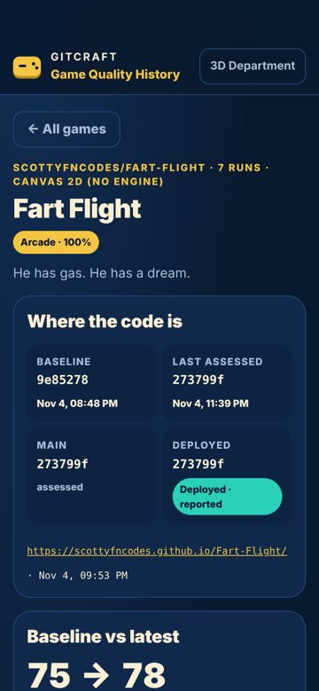
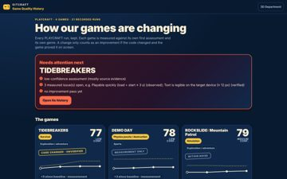
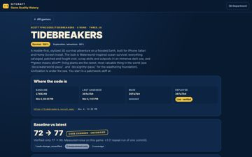
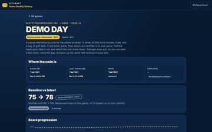
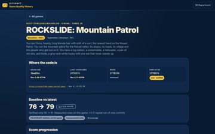
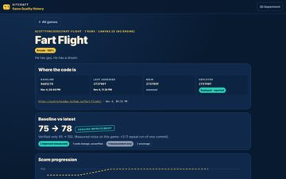
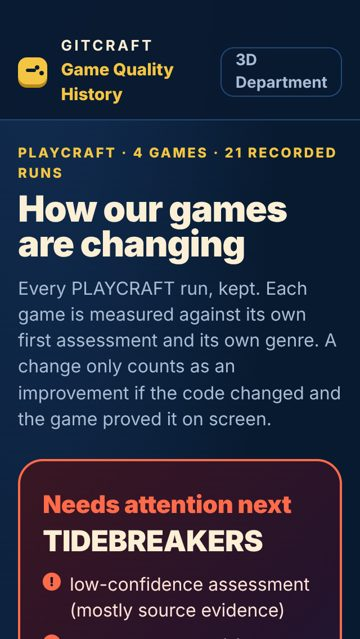
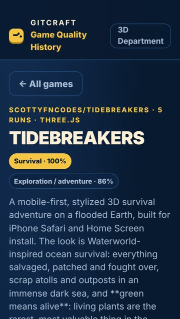
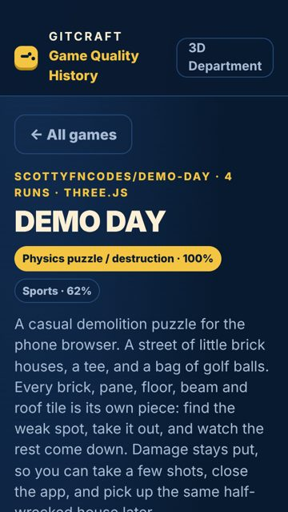
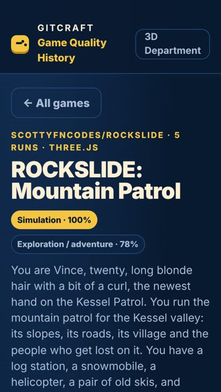
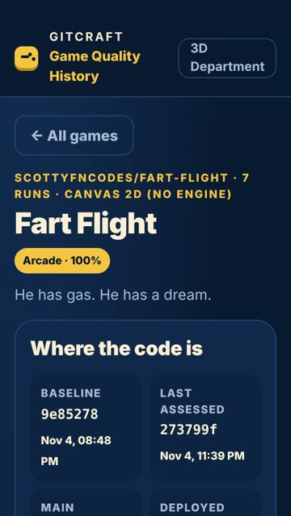
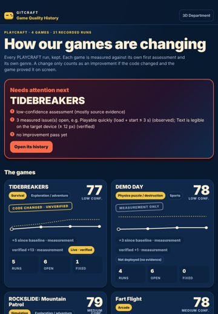
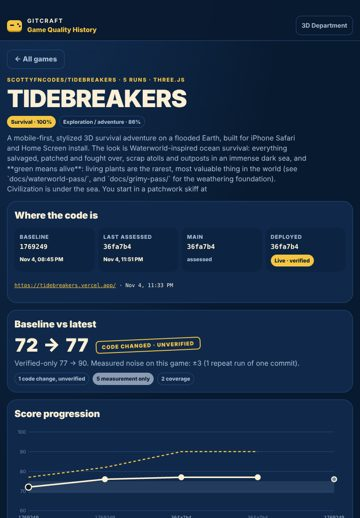
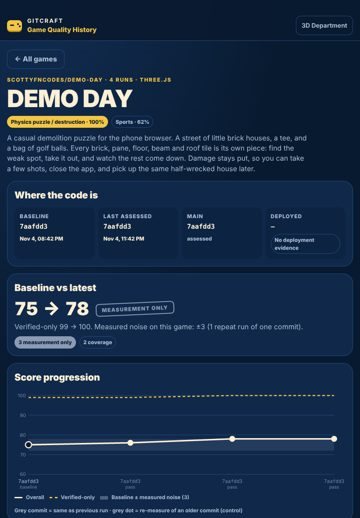
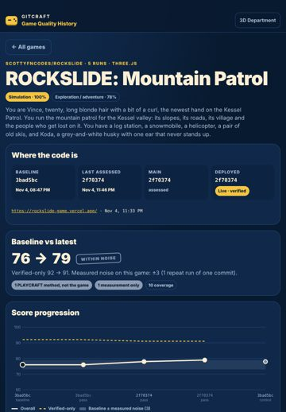
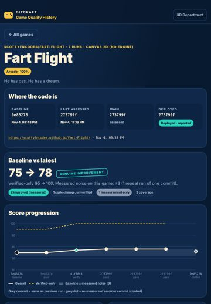

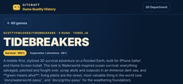
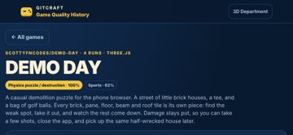
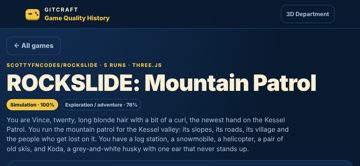
10 · Prioritised improvement plan
| # | Tier | Fix | Severity | Seen | Cost |
|---|---|---|---|---|---|
| 1 | polish | Two primary actions compete Keep one filled primary button per group; make the other secondary (outline or tonal). | minor | 2× | low |
Journeys
| Journey | Viewport | Result | Taps | Confirmations | Feedback ms |
|---|---|---|---|---|---|
| reach open-its-history auto | iphone17 | ok | 1 | 0 | 153 |
| reach demo-day-physics-puzzle-destruction-spor auto | iphone17 | ok | 1 | 0 | 146 |
| reach rockslide-mountain-patrol-simulation-exp auto | iphone17 | ok | 1 | 0 | 174 |
| reach fart-flight-arcade-78-medium-conf-genuin auto | iphone17 | ok | 1 | 0 | 146 |
| reach open-its-history auto | desktop | ok | 1 | 0 | 124 |
| reach demo-day-physics-puzzle-destruction-spor auto | desktop | ok | 1 | 0 | 124 |
| reach rockslide-mountain-patrol-simulation-exp auto | desktop | ok | 1 | 0 | 176 |
| reach fart-flight-arcade-78-medium-conf-genuin auto | desktop | ok | 1 | 0 | 179 |
Before / after
Comparable: yes — same method, same screens, viewports and journeys; deltas use only metrics measured in both runs
| Before | After | Δ (same metrics) | |
|---|---|---|---|
| Visual Quality | 84.2 | 95.8 | +11.6 |
| Usability | 90.7 | 100 | +9.3 |
| Consistency | 83.6 | 91.4 | +7.8 |
| Overall | 86.2 | 95.7 | +9.5 |
Resolved 15 · persisting 1 · new 0 · regressions 0 · coverage lost: none
- ✅ Accessibility: Elements must meet minimum color contrast ratio thresholds
- ✅ Touch target is too small
- ✅ Text is too small to read comfortably
- ✅ Uneven spacing between related elements
- ✅ Accessibility: Heading levels should only increase by one
- ✅ Controls are too close together
- ✅ Accessibility: Scrollable region must have keyboard access
- ✅ No pressed (active) state
- ✅ Lines of text are too long
- ✅ The same heading level has different sizes on different screens
- ✅ Navigation does not show where you are
- ✅ No hover state
- ✅ Spacing does not follow a consistent scale
- ✅ Click target is below 24 px
- ✅ Controls stretch across the desktop window
Generic design tells (advisory, not scored)
Defaults unguided builds reach for, read from the rendered page. Each is a question, not a defect: the project's own art direction wins. Accept a deliberate one with accept_tells.
- Eyebrow label above a heading — 6× on home. A small tracked-out uppercase kicker over every heading is a template rhythm, and the heading usually says it already. Ask: Delete the label and let the heading carry the section; keep a label only when it carries information the heading does not.
div.eyebrowPLAYCRAFT · 4 GAMES · 21 RECORDED RUNS · home @ iphone17
Evidence and limits
- Every viewport is browser emulation (Playwright + Chromium 153.0.8010.12); iPhone sizes are CSS pixels and safe-area insets are emulated through CDP (Emulation.setSafeAreaInsetsOverride). Safari-specific rendering (WebKit), the real on-screen keyboard and physical reach are not reproduced.
- Browser chrome: the first screen is re-measured with the viewport shortened by 120 px (Safari's toolbars); dynamic toolbar collapse is not reproduced.
- Keyboard interference: fields that would zoom on focus (font-size < 16 px) are measured; whether the on-screen keyboard covers a field is not testable in emulation.
- Hover/pressed/focus states are sampled once per visual variant of control; focus visibility comes from real Tab presses (desktop).
- Canvas-drawn interfaces (games): the DOM does not describe what is drawn, so DOM-geometry metrics cover only the HTML overlay (HUD, menus); use judgements for the canvas.
- No physical-device evidence: findings are emulation results, not device results.